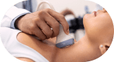
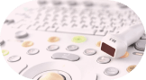
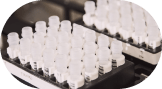

- косметология
- коррекция фигуры

- эндокринология
- акушерство и гинекология
- урология
- диетология
- ультразвуковая диагностика
- лабораторная диагностика
- Косметология
Отрасль науки о лице, занимающаяся диагностикой и лечением возрастных и эстетических проблем лица, как полноценной системы организма на основе междисциплинарного научного подхода и практических знаний о строении, функционировании и развитии лица человека. В отличие от стандартной косметологии и эстетической медицины интеллектуальная косметология использует высокий междисциплинарный уровень диагностики и лечения лица, требует высший уровень знаний и опыта медицинского персонала и его взаимодействия. Например, косметолог должен знать возможности ЛОР специалиста, стоматолога и пр., используя междисциплинарные знания в таких дисциплинах как: косметология, пластическая хирургия, отоларингология, стоматология, неврология, офтальмология, ортопедия, дерматология, общая медицина, анатомия, физиология, биомеханика, физиогномика, психология, эстетика, антропология.
Отрасль науки о лице, занимающаяся диагностикой и лечением возрастных и эстетических проблем лица, как полноценной системы организма на основе междисциплинарного научного подхода и практических знаний о строении, функционировании и развитии лица человека. В отличие от стандартной косметологии и эстетической медицины интеллектуальная косметология.
01Маникюр, педикюрГигиеническая обработка, уход за кожей рук и ногтями, работа по приданию формы и обработка краёв, украшение декором и многое другое.о клинике02PRP технология реконструктивной клеточной косметологии от regenlab (швейцария)Гигиеническая обработка, уход за кожей рук и ногтями, работа по приданию формы и обработка краёв, украшение декором и многое другое.о клинике03Palomar icon, лечение растяжек, стрий, шрамов, рубцовГигиеническая обработка, уход за кожей рук и ногтями, работа по приданию формы и обработка краёв, украшение декором и многое другое.о клинике04Маникюр, педикюрГигиеническая обработка, уход за кожей рук и ногтями, работа по приданию формы и обработка краёв, украшение декором и многое другое.о клинике01Маникюр, педикюрГигиеническая обработка, уход за кожей рук и ногтями, работа по приданию формы и обработка краёв, украшение декором и многое другое.о клинике02PRP технология реконструктивной клеточной косметологии от regenlab (швейцария)Гигиеническая обработка, уход за кожей рук и ногтями, работа по приданию формы и обработка краёв, украшение декором и многое другое.о клинике03Palomar icon, лечение растяжек, стрий, шрамов, рубцовГигиеническая обработка, уход за кожей рук и ногтями, работа по приданию формы и обработка краёв, украшение декором и многое другое.о клинике05Маникюр, педикюрГигиеническая обработка, уход за кожей рук и ногтями, работа по приданию формы и обработка краёв, украшение декором и многое другое.о клинике02PRP технология реконструктивной клеточной косметологии от regenlab (швейцария)Гигиеническая обработка, уход за кожей рук и ногтями, работа по приданию формы и обработка краёв, украшение декором и многое другое.о клинике01Маникюр, педикюрГигиеническая обработка, уход за кожей рук и ногтями, работа по приданию формы и обработка краёв, украшение декором и многое другое.о клинике02PRP технология реконструктивной клеточной косметологии от regenlab (швейцария)Гигиеническая обработка, уход за кожей рук и ногтями, работа по приданию формы и обработка краёв, украшение декором и многое другое.о клинике - коррекция фигуры
Отрасль науки о лице, занимающаяся диагностикой и лечением возрастных и эстетических проблем лица, как полноценной системы организма на основе междисциплинарного научного подхода и практических знаний о строении, функционировании и развитии лица человека. В отличие от стандартной косметологии и эстетической медицины интеллектуальная косметология использует высокий междисциплинарный уровень диагностики и лечения лица, требует высший уровень знаний и опыта медицинского персонала и его взаимодействия. Например, косметолог должен знать возможности ЛОР специалиста, стоматолога и пр., используя междисциплинарные знания в таких дисциплинах как: косметология, пластическая хирургия, отоларингология, стоматология, неврология, офтальмология, ортопедия, дерматология, общая медицина, анатомия, физиология, биомеханика, физиогномика, психология, эстетика, антропология.
Отрасль науки о лице, занимающаяся диагностикой и лечением возрастных и эстетических проблем лица, как полноценной системы организма на основе междисциплинарного научного подхода и практических знаний о строении, функционировании и развитии лица человека. В отличие от стандартной косметологии и эстетической медицины интеллектуальная косметология.
01Маникюр, педикюрГигиеническая обработка, уход за кожей рук и ногтями, работа по приданию формы и обработка краёв, украшение декором и многое другое.о клинике02PRP технология реконструктивной клеточной косметологии от regenlab (швейцария)Гигиеническая обработка, уход за кожей рук и ногтями, работа по приданию формы и обработка краёв, украшение декором и многое другое.о клинике03Palomar icon, лечение растяжек, стрий, шрамов, рубцовГигиеническая обработка, уход за кожей рук и ногтями, работа по приданию формы и обработка краёв, украшение декором и многое другое.о клинике04Маникюр, педикюрГигиеническая обработка, уход за кожей рук и ногтями, работа по приданию формы и обработка краёв, украшение декором и многое другое.о клинике01Маникюр, педикюрГигиеническая обработка, уход за кожей рук и ногтями, работа по приданию формы и обработка краёв, украшение декором и многое другое.о клинике02PRP технология реконструктивной клеточной косметологии от regenlab (швейцария)Гигиеническая обработка, уход за кожей рук и ногтями, работа по приданию формы и обработка краёв, украшение декором и многое другое.о клинике03Palomar icon, лечение растяжек, стрий, шрамов, рубцовГигиеническая обработка, уход за кожей рук и ногтями, работа по приданию формы и обработка краёв, украшение декором и многое другое.о клинике05Маникюр, педикюрГигиеническая обработка, уход за кожей рук и ногтями, работа по приданию формы и обработка краёв, украшение декором и многое другое.о клинике02PRP технология реконструктивной клеточной косметологии от regenlab (швейцария)Гигиеническая обработка, уход за кожей рук и ногтями, работа по приданию формы и обработка краёв, украшение декором и многое другое.о клинике01Маникюр, педикюрГигиеническая обработка, уход за кожей рук и ногтями, работа по приданию формы и обработка краёв, украшение декором и многое другое.о клинике02PRP технология реконструктивной клеточной косметологии от regenlab (швейцария)Гигиеническая обработка, уход за кожей рук и ногтями, работа по приданию формы и обработка краёв, украшение декором и многое другое.о клинике - эндокринология
Отрасль науки о лице, занимающаяся диагностикой и лечением возрастных и эстетических проблем лица, как полноценной системы организма на основе междисциплинарного научного подхода и практических знаний о строении, функционировании и развитии лица человека. В отличие от стандартной косметологии и эстетической медицины интеллектуальная косметология использует высокий междисциплинарный уровень диагностики и лечения лица, требует высший уровень знаний и опыта медицинского персонала и его взаимодействия. Например, косметолог должен знать возможности ЛОР специалиста, стоматолога и пр., используя междисциплинарные знания в таких дисциплинах как: косметология, пластическая хирургия, отоларингология, стоматология, неврология, офтальмология, ортопедия, дерматология, общая медицина, анатомия, физиология, биомеханика, физиогномика, психология, эстетика, антропология.
Отрасль науки о лице, занимающаяся диагностикой и лечением возрастных и эстетических проблем лица, как полноценной системы организма на основе междисциплинарного научного подхода и практических знаний о строении, функционировании и развитии лица человека. В отличие от стандартной косметологии и эстетической медицины интеллектуальная косметология.
01Маникюр, педикюрГигиеническая обработка, уход за кожей рук и ногтями, работа по приданию формы и обработка краёв, украшение декором и многое другое.о клинике02PRP технология реконструктивной клеточной косметологии от regenlab (швейцария)Гигиеническая обработка, уход за кожей рук и ногтями, работа по приданию формы и обработка краёв, украшение декором и многое другое.о клинике03Palomar icon, лечение растяжек, стрий, шрамов, рубцовГигиеническая обработка, уход за кожей рук и ногтями, работа по приданию формы и обработка краёв, украшение декором и многое другое.о клинике04Маникюр, педикюрГигиеническая обработка, уход за кожей рук и ногтями, работа по приданию формы и обработка краёв, украшение декором и многое другое.о клинике01Маникюр, педикюрГигиеническая обработка, уход за кожей рук и ногтями, работа по приданию формы и обработка краёв, украшение декором и многое другое.о клинике02PRP технология реконструктивной клеточной косметологии от regenlab (швейцария)Гигиеническая обработка, уход за кожей рук и ногтями, работа по приданию формы и обработка краёв, украшение декором и многое другое.о клинике03Palomar icon, лечение растяжек, стрий, шрамов, рубцовГигиеническая обработка, уход за кожей рук и ногтями, работа по приданию формы и обработка краёв, украшение декором и многое другое.о клинике05Маникюр, педикюрГигиеническая обработка, уход за кожей рук и ногтями, работа по приданию формы и обработка краёв, украшение декором и многое другое.о клинике02PRP технология реконструктивной клеточной косметологии от regenlab (швейцария)Гигиеническая обработка, уход за кожей рук и ногтями, работа по приданию формы и обработка краёв, украшение декором и многое другое.о клинике01Маникюр, педикюрГигиеническая обработка, уход за кожей рук и ногтями, работа по приданию формы и обработка краёв, украшение декором и многое другое.о клинике02PRP технология реконструктивной клеточной косметологии от regenlab (швейцария)Гигиеническая обработка, уход за кожей рук и ногтями, работа по приданию формы и обработка краёв, украшение декором и многое другое.о клинике - эндокринология
Отрасль науки о лице, занимающаяся диагностикой и лечением возрастных и эстетических проблем лица, как полноценной системы организма на основе междисциплинарного научного подхода и практических знаний о строении, функционировании и развитии лица человека. В отличие от стандартной косметологии и эстетической медицины интеллектуальная косметология использует высокий междисциплинарный уровень диагностики и лечения лица, требует высший уровень знаний и опыта медицинского персонала и его взаимодействия. Например, косметолог должен знать возможности ЛОР специалиста, стоматолога и пр., используя междисциплинарные знания в таких дисциплинах как: косметология, пластическая хирургия, отоларингология, стоматология, неврология, офтальмология, ортопедия, дерматология, общая медицина, анатомия, физиология, биомеханика, физиогномика, психология, эстетика, антропология.
Отрасль науки о лице, занимающаяся диагностикой и лечением возрастных и эстетических проблем лица, как полноценной системы организма на основе междисциплинарного научного подхода и практических знаний о строении, функционировании и развитии лица человека. В отличие от стандартной косметологии и эстетической медицины интеллектуальная косметология.
01Маникюр, педикюрГигиеническая обработка, уход за кожей рук и ногтями, работа по приданию формы и обработка краёв, украшение декором и многое другое.о клинике02PRP технология реконструктивной клеточной косметологии от regenlab (швейцария)Гигиеническая обработка, уход за кожей рук и ногтями, работа по приданию формы и обработка краёв, украшение декором и многое другое.о клинике03Palomar icon, лечение растяжек, стрий, шрамов, рубцовГигиеническая обработка, уход за кожей рук и ногтями, работа по приданию формы и обработка краёв, украшение декором и многое другое.о клинике04Маникюр, педикюрГигиеническая обработка, уход за кожей рук и ногтями, работа по приданию формы и обработка краёв, украшение декором и многое другое.о клинике01Маникюр, педикюрГигиеническая обработка, уход за кожей рук и ногтями, работа по приданию формы и обработка краёв, украшение декором и многое другое.о клинике02PRP технология реконструктивной клеточной косметологии от regenlab (швейцария)Гигиеническая обработка, уход за кожей рук и ногтями, работа по приданию формы и обработка краёв, украшение декором и многое другое.о клинике03Palomar icon, лечение растяжек, стрий, шрамов, рубцовГигиеническая обработка, уход за кожей рук и ногтями, работа по приданию формы и обработка краёв, украшение декором и многое другое.о клинике05Маникюр, педикюрГигиеническая обработка, уход за кожей рук и ногтями, работа по приданию формы и обработка краёв, украшение декором и многое другое.о клинике02PRP технология реконструктивной клеточной косметологии от regenlab (швейцария)Гигиеническая обработка, уход за кожей рук и ногтями, работа по приданию формы и обработка краёв, украшение декором и многое другое.о клинике01Маникюр, педикюрГигиеническая обработка, уход за кожей рук и ногтями, работа по приданию формы и обработка краёв, украшение декором и многое другое.о клинике02PRP технология реконструктивной клеточной косметологии от regenlab (швейцария)Гигиеническая обработка, уход за кожей рук и ногтями, работа по приданию формы и обработка краёв, украшение декором и многое другое.о клинике - эндокринология
Отрасль науки о лице, занимающаяся диагностикой и лечением возрастных и эстетических проблем лица, как полноценной системы организма на основе междисциплинарного научного подхода и практических знаний о строении, функционировании и развитии лица человека. В отличие от стандартной косметологии и эстетической медицины интеллектуальная косметология использует высокий междисциплинарный уровень диагностики и лечения лица, требует высший уровень знаний и опыта медицинского персонала и его взаимодействия. Например, косметолог должен знать возможности ЛОР специалиста, стоматолога и пр., используя междисциплинарные знания в таких дисциплинах как: косметология, пластическая хирургия, отоларингология, стоматология, неврология, офтальмология, ортопедия, дерматология, общая медицина, анатомия, физиология, биомеханика, физиогномика, психология, эстетика, антропология.
Отрасль науки о лице, занимающаяся диагностикой и лечением возрастных и эстетических проблем лица, как полноценной системы организма на основе междисциплинарного научного подхода и практических знаний о строении, функционировании и развитии лица человека. В отличие от стандартной косметологии и эстетической медицины интеллектуальная косметология.
01Маникюр, педикюрГигиеническая обработка, уход за кожей рук и ногтями, работа по приданию формы и обработка краёв, украшение декором и многое другое.о клинике02PRP технология реконструктивной клеточной косметологии от regenlab (швейцария)Гигиеническая обработка, уход за кожей рук и ногтями, работа по приданию формы и обработка краёв, украшение декором и многое другое.о клинике03Palomar icon, лечение растяжек, стрий, шрамов, рубцовГигиеническая обработка, уход за кожей рук и ногтями, работа по приданию формы и обработка краёв, украшение декором и многое другое.о клинике04Маникюр, педикюрГигиеническая обработка, уход за кожей рук и ногтями, работа по приданию формы и обработка краёв, украшение декором и многое другое.о клинике01Маникюр, педикюрГигиеническая обработка, уход за кожей рук и ногтями, работа по приданию формы и обработка краёв, украшение декором и многое другое.о клинике02PRP технология реконструктивной клеточной косметологии от regenlab (швейцария)Гигиеническая обработка, уход за кожей рук и ногтями, работа по приданию формы и обработка краёв, украшение декором и многое другое.о клинике03Palomar icon, лечение растяжек, стрий, шрамов, рубцовГигиеническая обработка, уход за кожей рук и ногтями, работа по приданию формы и обработка краёв, украшение декором и многое другое.о клинике05Маникюр, педикюрГигиеническая обработка, уход за кожей рук и ногтями, работа по приданию формы и обработка краёв, украшение декором и многое другое.о клинике02PRP технология реконструктивной клеточной косметологии от regenlab (швейцария)Гигиеническая обработка, уход за кожей рук и ногтями, работа по приданию формы и обработка краёв, украшение декором и многое другое.о клинике01Маникюр, педикюрГигиеническая обработка, уход за кожей рук и ногтями, работа по приданию формы и обработка краёв, украшение декором и многое другое.о клинике02PRP технология реконструктивной клеточной косметологии от regenlab (швейцария)Гигиеническая обработка, уход за кожей рук и ногтями, работа по приданию формы и обработка краёв, украшение декором и многое другое.о клинике
- Телефон+7 (938) 879-21-57
- АдресМосква, Бутырская улица, 77, этаж 3
- E-maile-mail@yandex.ru
- Понедельник-суббота09:00 - 21:00
- ВоскресеньеВыходной